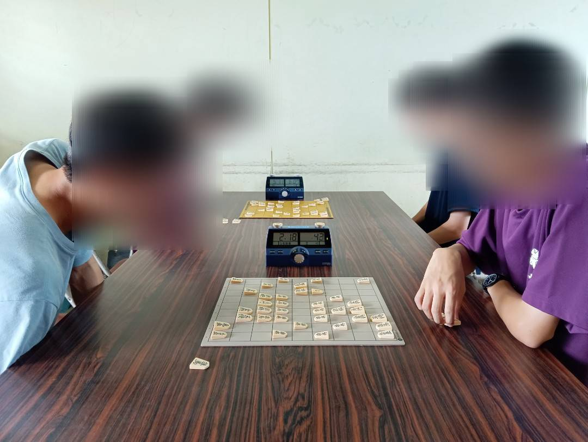

校内活動
平日の放課後に普通教室にて部員同士での対局、ネット対局や書籍の棋譜並べを中心に活動しています。たまに部室で活動するときもあります。
部員同士での対局では感想戦までしっかり行います。たまに顧問と対局できる機会があります。
活動は基本的には個人の自由ですが、棋力の向上や大会で活躍したいと思う人は積極的に参加することをお勧めします。
また、毎年開催されているくすのき祭にも参加し、来場者と対局を行っています。
校外活動
年4回高校生だけでの大会があります。殆どの部員はC級から参加し徐々にクラスを上げていきますが、自分の段級位を証明できるもの(認定書など)を持っている場合は最初からA,B級に参加できることがあります。
また、年2回高校研修会があり、高校生選手や県内,関東,全国で活躍されている強豪と対局することができます。普段戦わない相手と対局できる絶好の機会ですが、参加にはB級本戦進出選手以上の実力が求められます。
